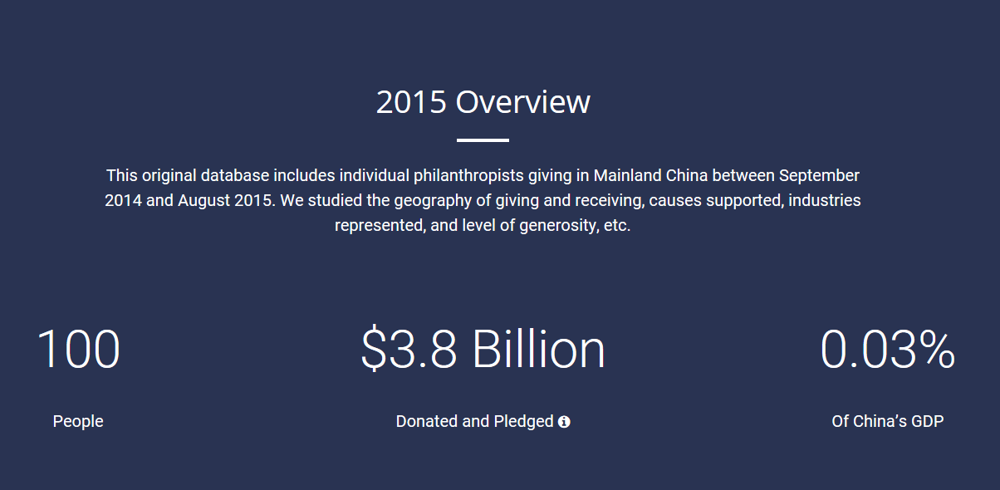

The growth of new wealth is one of the most important, far-reaching, and captBoivating aspects of change in modern China. Traditions of benevolent societies, clan-based giving, temple association support, and voluntarism have long been present in Chinese society, and coexisted alongside state-affiliated social welfare institutions throughout its dynastic, Republican, and Communist periods. Rapid economic expansion over the past 35 years has resulted in a generation of highly concentrated wealth holders who are now grappling with familiar questions of any gilded age: How should I give back to my community? Which causes are the most in need? How can I create meaningful change and have a lasting impact? Chinese philanthropy has also begun to branch into international networks of giving. Global leaders in the sector such as Bill Gates and Warren Buffett have sought to recruit counterparts of the developing world into “The Giving Pledge” and other forms of phased planning that enables donors, still far from retirement, to shape their giving. The rise of this new cohort of philanthropists leads to compelling questions:
As a result, impoverished provinces with limited local resources fare quite poorly. Less-developed regions with considerable environmental, educational, welfare, cultural, health, and disaster relief needs such as Xinjiang, Ningxia, and Tibet receive a dramatically lower amount of donations in both absolute and relative terms. For example, only 0.01% of 2015 giving by our Top 100 donors goes to Tibet, and a mere 0.04% goes to Xinjiang.
This image of Earth’s city lights was created with data from the Defense Meteorological Satellite Program (DMSP) Operational Linescan System (OLS). Originally designed to view clouds by moonlight, the OLS is also used to map the locations of permanent lights on the Earth’s surface. The brightest areas of the Earth are the most urbanized, but not necessarily the most populated.
“Artificial lighting is a excellent remote sensing observable and proxy for human activity,” says Chris Elvidge, who leads the Earth Observation Group at NOAA’s National Geophysical Data Center. Social scientists and demographers have used night lights to model the spatial distribution of economic activity, of constructed surfaces, and of populations. Planners and environmental groups have used maps of lights to select sites for astronomical observatories and to monitor human development around parks and wildlife refuges. Electric power companies, emergency managers, and news media turn to night lights to observe blackouts.